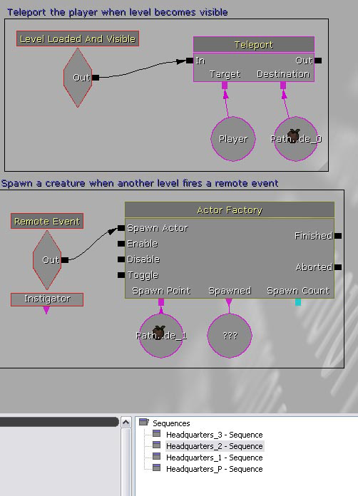

UDN
Search public documentation:
LevelStreamingHowTo
日本語訳
中国翻译
한국어
Interested in the Unreal Engine?
Visit the Unreal Technology site.
Looking for jobs and company info?
Check out the Epic games site.
Questions about support via UDN?
Contact the UDN Staff
中国翻译
한국어
Interested in the Unreal Engine?
Visit the Unreal Technology site.
Looking for jobs and company info?
Check out the Epic games site.
Questions about support via UDN?
Contact the UDN Staff
UE3 Home > Level Streaming > Using Level Streaming
Using Level Streaming
Overview
The Persistent Level
- Create a new map, add a small cube of geometry out of sight somewhere (this simply validates it as a level as far as the engine is concerned, and will likely be a step that is done away with eventually)
- Place a playerstart wherever you would like the player to begin. Note that in the persistent level this playerstart will likely be floating in space, but once you have streamed a level in, it should be moved to wherever you want the player to begin in the first streamed level. We will be launching the persistent level when it's time to play the game, but the player will actually be moving through the geometry of one of your streamed levels, not the persistent level.
- Save your map, giving it a name denoting it as the persistent level for your own organizational purposes. Headquarters_P, for example.
- Open the generic browser, and click on the "Level" tab. This is where you must list every level that you wish to stream in. If Headquarters consists of three maps, all three should be added here. Do so by selecting Level->New From File from the Level pull-down menu. The order in which you add the streaming levels is not important, but future versions of UnrealEd? will allow you to re-order the levels to keep things organized. You should end up with something like what is in the picture below.
- Note that you will be given the option to stream your levels in by distance or by kismet:
- Distance streaming loads and unloads a level based on the player's distance from the level's origin.
- Kismet streaming allows the designer to load and unload the level at will via kismet scripting, and thus is the most common choice here.
Persistent Level Quick How-To
- Create a new map in UnrealEd?
- Add a piece of simple BSP geometry, such as a cube
- Add a playerstart
- Add the levels you would like to stream in the Level Browser.
- Save and name the map
Scripted Streaming via Kismet
- Open Kismet
- Place a level startup (New Event -> Level Loaded)
- Place as many Stream Level actions as you have levels (New Action -> Level -> Stream Level)
- Add the name of each of your levels to the Stream Level actions by clicking on them and entering the level name where it says LevelName.
- Connect the level loaded to each of the Load inputs on the Stream Level actions.
Scripted Streaming Quick How-To
- Open Kismet
- Add a Level Loaded action and a StreamLevel action, connect the Level Loaded to the Load input
- Left-click on Stream Level and add the name of the level you would like to stream to the "LevelName" field and check the bMakeVisibleAfterLoad flag.
- Save your map and launch the game.
Distance-based Streaming
Distance Streaming Quick How-To
- Open the Generic Browser
- Click the Level tab
- Select Level->New From File from the Generic Browser file menu and select the level you would like to stream in
- Choose "Distance" streaming
- Making sure "Persistent Level" is selected, expand the WorldInfo property on the right-hand side. Right-click on the WorldInfo_# and select "Edit Properties"
- In the property menu that should now be open, expand WorldInfo and then StreamingLevels.
- Enter the distance from the player in game units at which you would like the level to be streamed into the world, and change the origin to the location in world space you would like that distance to be measured from.
Working with the Streamed Levels
Loading and Events
A new Kismet action was added to replace the Level Startup action that typically gets many events rolling when a level is loaded. This action is called Level Loaded And Visible. It basically functions in the same way as a Level Startup, but is designed to work in conjunction with the Change Level Visibility action. Whenever a level is made visible to the player, either by the CLV action or by streaming it in if the bMakeVisibleAfterLoad flag has been checked, this Loaded And Visible action will fire. This combined with Remote Events allows each streamed level to be its own self-contained entity that can be loaded and unloaded as necessary as well as receive and give events to other streamed levels. The example picture below has the player teleporting as soon as the subject level has been made visible, and also spawns a creature when a remote event from another level has been fired.  Example 5: Example script of a streamed levelMoving Actors Between Levels
As of the DEC 2007 QA-Approved build, you can move Actors between levels by simply copying them from one level (Ctrl + C), changing the current level and then pasting them (Ctrl + V). However, this uses a similar pathway to that of the MoveSelectedActorsToCurrentLevel in that it has to serialize them out to a scratch world in order to resolve potential references between the Actors. This functionality was introduced in changelist #203995 and #206418. In builds prior to the JAN 2007 QA-Approved build, you may have experiencd out of memory problems when moving a large number of Actors at once; but this was fixed when we improved performance (and memory usage) of editor transaction buffers (changelist #206829). Also in the JAN 2007 QA-Approved build, you can move Actors into a new level using the New Level from Selected Actors button in the Level Browser (changelist #206324).Optimization
Most developers will find that the more streaming levels they have the better, both for performance and workflow reasons. However, this should be tempered by a limiting factor currently in the system, namely that actors that have been placed in one level cannot be directly referenced in kismet by another level. Remote events can be fired and received to trigger events across streaming levels, but it is not possible to directly reference actors across levels at this point. In the picture above, Pathnode_0 and Pathnode_1 must be located in the same level as this script, in this case Headquarters_2. If either of those nodes were in HQ_1 or 3, these actions would not function. As of the December 2007 QA-Approved build, there is a feature that makes it easier to chop existing levels into streaming chunks.- Select a bunch of actors in the world.
- Select New Level from Selected Actors from the Level Browser’s Level.
- A new streaming level will be created on disk and added to the world, and the selected actors will then be moved to that new level.